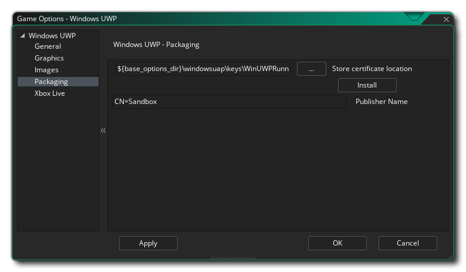

Cette section présente les différentes options disponibles qui contrôlent la compilation de vos projets de jeux UWP (Universal Windows Platform). Les différentes sections sont:
La section générale des options UWP vous permet de définir les informations sur le produit:
- Nom d'affichage: Spécifie le nom convivial de l'application affichée pour les utilisateurs (cette chaîne est localisable).
- Nom du package: il s'agit du nom du package que vous avez créé et doit correspondre à celui utilisé pour la clé de développeur que vous avez créée pour le jeu (voir la section sur l' empaquetage ci-dessous).
- Nom d'affichage du paquet: Ceci est le "nom court" du paquet et devrait idéalement être le même que le nom d'affichage
- Nom d'affichage de l'éditeur: il s'agit du nom de votre société ou de la personne que vous souhaitez associer en tant qu'éditeur de jeux.
- Version: Le numéro de version de votre jeu.
Après avoir configuré cela, vous pouvez sélectionner les différentes orientations que votre jeu peut être exécuté pour la meilleure expérience utilisateur. Les options disponibles sont:
- Paysage
- Portrait
- Paysage-retourné
- Portrait-inversé
Par défaut, tous ces éléments seront sélectionnés et vous devrez désélectionner ceux dont vous n'avez pas besoin.
Après avoir défini les options d'orientation, vous pouvez signaler les différentes autorisations dont votre application UWP aura besoin à partir des options suivantes:
- Activer la permission Internet: Déroule le jeu comme ayant accès à Internet. Ceci est désactivé par défaut.
- Activer la permission de microphone: Donne au jeu l'accès au microphone de l'appareil. Ceci est désactivé par défaut.
- Activer Sandbox IAP: Fait flotter le jeu en utilisant des achats In App en sandbox. Ceci est désactivé par défaut.
Enfin, vous avez deux options pour définir les versions de plate-forme Target et Minimum Windows. En général, vous ne voudrez pas les toucher et vous devriez les laisser à leurs valeurs par défaut, mais si vous rencontrez des problèmes de construction (en particulier, si vous ne pouvez pas installer le kit SDK Windows par défaut, vous devrez les modifier à ce que vous avez installé), alors vous pouvez vouloir les mettre à d'autres valeurs. Si vous n'êtes pas sûr des valeurs à définir, créez un nouveau projet UWP dans Visual Studio et examinez à quoi il définit les valeurs.
Les options graphiques sont celles que vous devez configurer pour déterminer comment votre jeu utilisera la carte graphique de votre périphérique UWP cible. Les options suivantes sont incluses pour vous permettre de modifier:
- Interpoler les couleurs entre les pixels: Active l'interpolation, qui "lisse" les pixels. Pour les graphismes en pixels nets, il devrait être désactivé, mais si vous avez de beaux dégradés alpha et des graphismes lissés, il est préférable de laisser le bouton actif. Ceci est désactivé par défaut.
- Curseur d'affichage: Lorsque cette option est activée, le curseur OS par défaut sera affiché dans votre jeu. Si cela est désactivé, alors que la souris est au-dessus de la fenêtre de jeu, il n'y aura pas de curseur visible sauf si vous en avez créé un dans le cadre du projet de jeu (il est activé par défaut).
- Démarrer le plein écran: Lorsque cette option est activée, le jeu démarre en mode plein écran. Notez que cela peut n'avoir aucun effet visible sur autre chose qu'un périphérique Windows 10 Desktop.
- Autoriser la commutation en plein écran: Lorsque cette option est activée, vous pouvez basculer le jeu entre les modes plein écran et fenêtré à l'aide des raccourcis appropriés. Notez que cela peut n'avoir aucun effet visible sur autre chose qu'un périphérique Windows 10 Desktop.
- Utilisez la synchronisation pour éviter les déchirures: Cette option existe mais a été désactivée car la plate-forme UWP nécessite que v-sync soit toujours active.
- Mise à l'échelle: Ici, vous pouvez choisir de conserver le rapport d'aspect (de sorte qu'une pièce 4: 3 sera "boîte aux lettres" sur un 16: 9) ou à l'échelle complète (étirement de l'image pour s'adapter à l'écran).
ATTENTION! La désactivation de la surface d'application désactivera toutes les options de mise à l'échelle définies dans les options de jeu UWP jusqu'à ce que vous l'ayez réactivée. Voir la surface d'application pour plus de détails.Enfin, il y a la possibilité de définir la taille de la page Texture. La taille par défaut (et la plus compatible) est 2048x2048, mais vous pouvez choisir n'importe où entre 256x256 jusqu'à un énorme 8192x8192! Il y a aussi un bouton marqué View qui va générer les pages de texture pour cette plate-forme, puis ouvrir une fenêtre pour que vous puissiez voir à quoi ils ressemblent. Cela peut être très utile si vous souhaitez voir comment les pages de texture sont structurées et éviter d'avoir des pages de texture plus grandes (ou plus petites) que nécessaire.
REMARQUE: sachez que plus la taille de la page de texture est grande, moins votre jeu sera compatible avec les périphériques UWP dont les spécifications sont inférieures.
La première partie de la section Images sert à définir le logo du jeu. C'est essentiellement l'icône que votre jeu utilisera dans l'écosystème UWP, et il est à noter que ces images peuvent être transparentes .png fichiers, auquel cas ils seront dessinés sur la couleur d'arrière - plan spécifiée dans cette section. Cette couleur d'arrière-plan est également appliquée à la couleur du bouton dans toutes les boîtes de dialogue appartenant à l'application et à la page Description de l'application dans la section Enregistrer sur les appareils.
Après avoir configuré le logo, vous pouvez définir l' écran de démarrage pour le jeu. C'est l'écran qui sera montré quand vous commencez votre jeu, et il ne peut pas être plus grand que 620 x 300 pixels et comme le logo il peut être un transparent .png fichier, auquel cas la couleur d'arrière - plan que vous utilisez sera utilisée.
Enfin, vous avez la possibilité de définir les différents carreaux que votre jeu utilisera sur les différents appareils sur lesquels UWP peut fonctionner. Vous pouvez définir les éléments suivants:
- L'image du petit carreau est l'image du logo qui apparaît à côté du nom de l'application dans la barre de recherche et d'autres zones de l'interface utilisateur. Il devrait être de 44 x 44 pixels.
- L'image de tuile moyenne devrait être une image de 71x71 pixels.
- L'image de mosaïque suivante est la mosaïque du logo de magasin et elle doit être de 50 x 50 pixels.
- La mosaïque d'image large est celle qui apparaît lorsque la mosaïque est dans son format large et doit être de 310 x 150 pixels. Si cette image n'est pas fournie, la mosaïque peut uniquement s'afficher au format carré et ne peut pas accepter les notifications basées sur des types de modèles étendus. Puisque l'utilisateur peut décider quel format utiliser, il est recommandé d'inclure une mosaïque d'image large. Notez également que si une mosaïque d'image large est fournie, la mosaïque peut apparaître initialement dans son format large.
- La grande mosaïque d'images est le format de grande mosaïque dynamique et doit être de 310 x 310 pixels. Notez que ceci ne sera utilisé que sur un système d'exploitation de bureau.
Il est à noter que GameMaker Studio 2 dispose d'un outil Project Image Generator qui peut être utilisé pour créer automatiquement toutes les images requises pour les différentes plates-formes cibles sur lesquelles votre jeu est compilé. Si vous utilisez cet outil, vous devez réviser les images créées pour vous assurer qu'elles correspondent à vos besoins.

GameMaker Studio 2 fournit une clé de développeur par défaut pour le développement WindowsUWP, mais il est recommandé de générer les vôtres et de les pointer ici. Pour ce faire, créez un projet vide dans Visual Studio Express puis stockez dans un endroit sûr une copie du fichier généré automatiquement *.pfx fichier qu'il aura inclus dans le projet vide (c'est la clé du développeur). Vous devriez ensuite lier cela *.pfx déposer ici.
Après la liaison au fichier, vous devez cliquer sur le bouton Installer associé, puis suivre les instructions de l'invite de commande qui s'ouvre. Si vous ne le faites pas, l'utilisation des boutons Run / Debug (ou F5) échouera et votre jeu ne pourra pas être testé sur la plateforme UWP (cependant, si vous utilisez Create Executable, le processus d'installation de certification sera automatiquement lancé si *.pfx doit encore être enregistré).
NOTE: Quand il s'agit de télécharger votre application au magasin, vous devrez obtenir la bonne *.pfx pour ton titre. Ceci est fait en associant votre application avec le Windows Store dans Visual Studio, ce qui entraîne Visual Studio à générer un nouveau *.pfx spécifiquement pour l'application. Il convient également de noter que vous pouvez associer n'importe quelle application au Windows Store dans Visual Studio, ce qui signifie que vous pouvez associer un projet vide à l'application Windows Store et copier simplement les données générées. pfx à un endroit sûr qui peut ensuite être utilisé dans les options de jeu UWP. Vous pouvez trouver des instructions sur la manière de procéder à partir de la base de connaissances YoYo Games.
La section Xbox Live des options de jeu UWP vous permet d'activer votre projet UWP pour l'utiliser sur la console Xbox One. L'activation du projet pour la Xbox vous permet d'effectuer les opérations suivantes lorsque le projet est exécuté sur une Xbox One:
- Connectez-vous à Xbox Live depuis l'application
- Utiliser l'identité de l'utilisateur Xbox Live d'une manière ou d'une autre dans le projet (par exemple, afficher le gamertag ou la photo du joueur)
Avant que vous puissiez faire ces choses cependant, vous devrez vous assurer que vous avez cliqué sur la case à cocher Activer Xbox Live, et si vous faites partie du Microsoft Creators Program, vous devriez également vérifier l'option de l' application du programme des créateurs. Si vous faites partie du programme des créateurs, vous devrez alors ajouter l' ID de titre et l' ID de configuration du service (vous trouverez plus d'informations à ce sujet auprès de Microsoft ).
Notez que pour tester la fonctionnalité Xbox Live dans votre projet, vous devez utiliser Create Executable plutôt que Run car la sortie UWP Xbox doit utiliser le certificat de signature Windows Store que vous fournissez dans le cadre de l'info Packaging (voir ci-dessus) plutôt que celui temporaire fourni avec GameMaker Studio 2, qui sera utilisé lors de l' GameMaker Studio 2 Run.
Une fois que vous avez activé XBox Live, vous pouvez ensuite utiliser les fonctions XBox Live de votre projet.